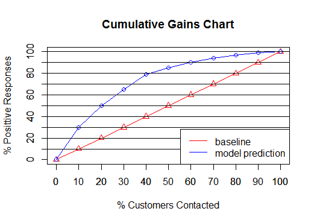
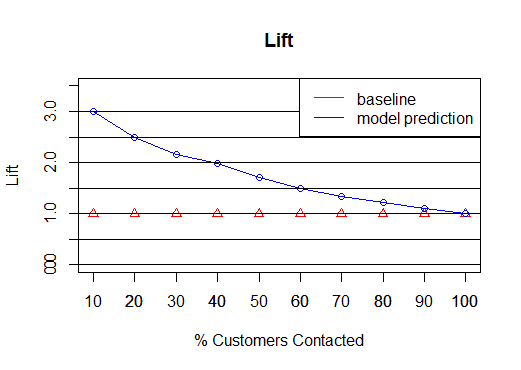
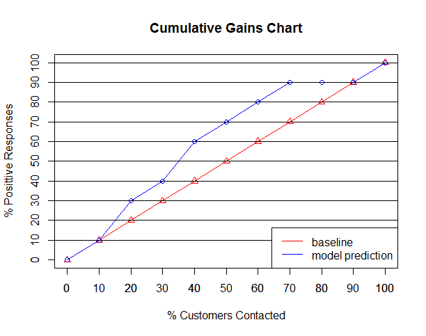
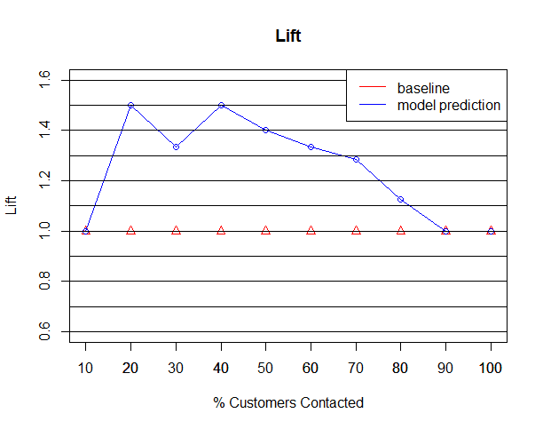

本文主要參考Cumulative Gains and Lift Charts寫成，再加以進行重點摘要。
- Lift 可以用來衡量預測模型的效率，可以告訴我們，在有模型的情況下，會比沒有模型好多少倍。
- Cumulative Gains Chart以及Lift Chat是用來幫助我們衡量的視覺化模型。
- 這兩張圖都有baseline及lift curve，如果這兩條線圍起來的面積越大，那模型的效果也越佳。
Example 1
假設向一個群體內所有人發傳單，會有20%的人有正向的回應，發傳單的成本是$1。
| Cost($) | Total Customers Contacted | Positive Responses |
|---|---|---|
| 100,000 | 100,000 | 20,000 |
如果我們使用模型，則可以更好的發傳單計畫。
例如第一列，我們用模型找出10,000個人，只發傳單給他們，會有6000人有正向的回覆。其他列以此類推。最後一列表示的是，如果我們發傳單給所有的人，一樣會有20%的人回覆，模型不會讓更多人回覆，只是有個更聰明的找人方法。
| Cost($) | Total Customers Contacted | Positive Responses |
|---|---|---|
| 10000 | 10000 | 6000 |
| 20000 | 20000 | 10000 |
| 30000 | 30000 | 13000 |
| 40000 | 40000 | 15800 |
| 50000 | 50000 | 17000 |
| 60000 | 60000 | 18000 |
| 70000 | 70000 | 18800 |
| 80000 | 80000 | 19400 |
| 90000 | 90000 | 19800 |
| 100000 | 10000 | 20000 |
Cumulative Gains Chart
- y軸代表的是正面回覆的比例，分母是整個群體正面回覆的人數，這個例子是20,000
- x軸表示的發傳單的數量占群體總數的比例
- Baseline：沒有採用模型，隨機從群體挑選出 p% 的人發傳單，那有正面回應的人佔整個群體正面回覆的人數，自然就是 p%。
- Lift Curve：採用模型挑選要發給哪些人傳單。y值的分子代表模型挑出來發傳單且有正面回應的人數，分母是整個群體正面回覆的人數。

建立範例資料1
2
3
4
5
6
7
8baseline <- data.frame(
cost=seq(0,100000,by=10000),
cus_contacted = seq(0,100000,by=10000),
positive_resp = seq(0,100000,by=10000) * 0.2)
model_result <- data.frame(
cost = seq(0,100000,by=10000),
cus_contacted = seq(0,100000,by=10000),
positive_resp = c(0,6000,10000,13000,15800,17000,18000,18800,19400,19800,20000))
建立 Cumulative Gain Chart1
2
3
4
5
6
7
8
9
10
11
12plot(c(0,100),c(0,100), type="n", xlab = "% Customers Contacted", ylab="% Posittive Responses",main = "Cumulative Gains Chart")
axis(1, seq(0,100,by=10))
axis(2, seq(0,100,by=10))
lines(x = seq(0,100,by=10),
baseline$positive_resp/(20000/100),
type='o', col='red', pch=2)
# 當向p%的客戶發傳單時，會有x人回傳，gain就是x除以全部發且會回傳的人
lines(x = seq(0,100,by=10),
model_result$positive_resp/(20000/100),
type='o', col='blue',pch=1)
abline(h=seq(10,100,by=10))
legend("bottomright", c("baseline", "model prediction"), lty = c(1,1), col=c("red","blue"))
Lift Chart
- 顯示出因為模型而提升了多少效率(Lift)
- 計算有模型與沒有模型有正向回覆的人數之比
- 例如：發傳單給佔群體10%的人數，如果使用模型，正向回覆率為30%，亦即正向回覆6000人，而整個群體的正向回覆有20000人，故6000/20000 = 30%。但若沒有使用模型，正向回覆率為10%。所以lift值為30%/10% = 3
- 也就是說，如果用模型的結果發傳單給佔10%群體的人們，我們可能得到回覆會比沒有模型多三倍。

1 | ### Lift Chart |
Example 2：模型案例
模型如下
$$ Y = 100 - Age(x) $$
資料如下
| Cumtomer | Age | Actual Response |
|---|---|---|
| Alan | 39 | N |
| Bob | 21 | Y |
| Jessica | 25 | Y |
| Elizabeth | 30 | Y |
| Hilary | 19 | Y |
| Fred | 48 | N |
| Alex | 12 | Y |
| Margot | 51 | N |
| Sean | 65 | Y |
| Chris | 42 | N |
| Philip | 20 | Y |
| Catherine | 23 | N |
| Amy | 13 | N |
| Erin | 35 | Y |
| Trent | 55 | N |
| Preston | 25 | N |
| John | 76 | N |
| Nancy | 24 | Y |
| Kim | 31 | N |
| Laura | 29 | Y |
- 計算每個欄位的Y值
- 依照Y值排列
| Cumtomer | Y | Actual Response |
|---|---|---|
| Alex | 88 | Y |
| Amy | 87 | N |
| Hilary | 81 | Y |
| Philip | 80 | Y |
| Bob | 79 | Y |
| Catherine | 77 | N |
| Nancy | 76 | Y |
| Jessica | 75 | Y |
| Preston | 75 | N |
| Laura | 71 | Y |
| Elizabeth | 70 | Y |
| Kim | 69 | N |
| Erin | 65 | Y |
| Alan | 61 | N |
| Chris | 58 | N |
| Fred | 52 | N |
| Margot | 49 | N |
| Trent | 45 | N |
| Sean | 35 | Y |
| John | 24 | N |
依據分割點，計算回覆率
Respose Rate = Number of Responses / Total Number of Responses
| #(Cumtomers contacted) | Number of Response | Response Rate |
|---|---|---|
| 2 | 1 | 10% |
| 4 | 3 | 30% |
| 6 | 4 | 40% |
| 8 | 6 | 60% |
| 10 | 7 | 70% |
| 12 | 8 | 80% |
| 14 | 9 | 90% |
| 16 | 9 | 90% |
| 18 | 9 | 90% |
| 20 | 10 | 100% |
Cumulative Gains Chart
資料整理
1 | names <- c("Alan","Bob", "Jessica", "Elizabeth", "Hilary", "Fred","Alex", "Margot", "Sean", |
製作Cumulative Gain Chart
1
2
3
4
5# Cumulative Gains Chart
baseline <- seq(0,100,by=10)
plot(c(0,100),c(0,100), type="n", xlab = "% Customers Contacted", ylab="% Posittive Responses",main = "Cumulative Gains Chart")
axis(1, seq(0,100,by=10))
axis(2, seq(0,100,by=10))
製作Lift Chart
1
2
3
4
5
6
7
8
9
10
11
12### Lift Chart
plot(c(10,100),c(0.6, 1.6), type="n", xlab = "% Customers Contacted", ylab="Lift" ,main = "Lift")
axis(1, seq(0,100,by=10))
axis(2, seq(0,100,by=10))
lines(x = seq(0,100,by=10),
baseline/baseline,
type='o', col='red', pch=2)
lines(x = seq(0,100,by=10),
c(0,cumu_data$resp_rate)/baseline,
type='o', col='blue',pch=1)
abline(h=seq(0.6,1.6,by=0.1))
legend("topright", c("baseline", "model prediction"), lty = c(1,1), col=c("red","blue"))
參考資料
Cumulative Gains and Lift Charts
SPSS的Lift Chart
一分鐘建立與評估資料探勘模型